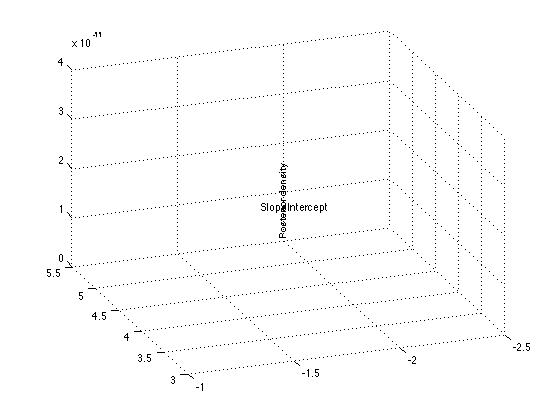
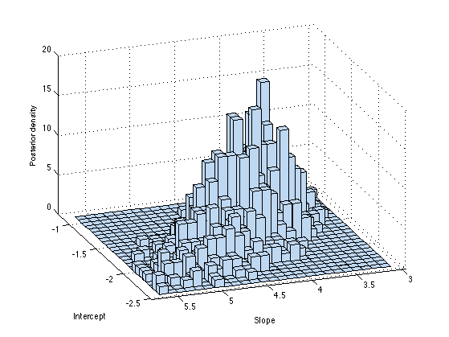

Contents
% Slice sampling in 2d % From http://www.mathworks.com/products/statistics/demos.html?file=/products/demos/shipping/stats/bayesdemo.html %PMTKslow requireStatsToolbox(); setSeed(0);
Setup
Likelihood: binomial regression poor(i) ~ Binom(total(i), logit(theta1 + theta2*weight(i))
% A set of car weights weight = [2100 2300 2500 2700 2900 3100 3300 3500 3700 3900 4100 4300]'; weight = (weight-2800)/1000; % recenter and rescale % The number of cars tested at each weight total = [48 42 31 34 31 21 23 23 21 16 17 21]'; % The number of cars that have poor mpg performances at each weight poor = [1 2 0 3 8 8 14 17 19 15 17 21]'; logitp = @(b,x) exp(b(1)+b(2).*x)./(1+exp(b(1)+b(2).*x)); prior1 = @(b1) normpdf(b1,0,20); % prior for intercept prior2 = @(b2) normpdf(b2,0,20); % prior for slope
Numerical evaluation of posteiror in 2d
post = @(b) prod(binopdf(poor,total,logitp(b,weight))) ... % likelihood * prior1(b(1)) * prior2(b(2)); % priors figure; b1 = linspace(-2.5, -1, 50); b2 = linspace(3, 5.5, 50); simpost = zeros(50,50); for i = 1:length(b1) for j = 1:length(b2) simpost(i,j) = post([b1(i), b2(j)]); end; end; mesh(b2,b1,simpost) xlabel('Slope') ylabel('Intercept') zlabel('Posterior density') view(-110,30) %printPmtkFigure('sliceSamplingDemo2dGrid')
MCMC
initial = [1 1]; nsamples = 1000; trace = slicesample(initial,nsamples,'pdf',post,'width',[20 2], ... 'burnin', 50, 'thin', 10); figure; hist3(trace,[25,25]); xlabel('Intercept') ylabel('Slope') zlabel('Posterior density') view(-110,30) %printPmtkFigure('sliceSampling2dHist')